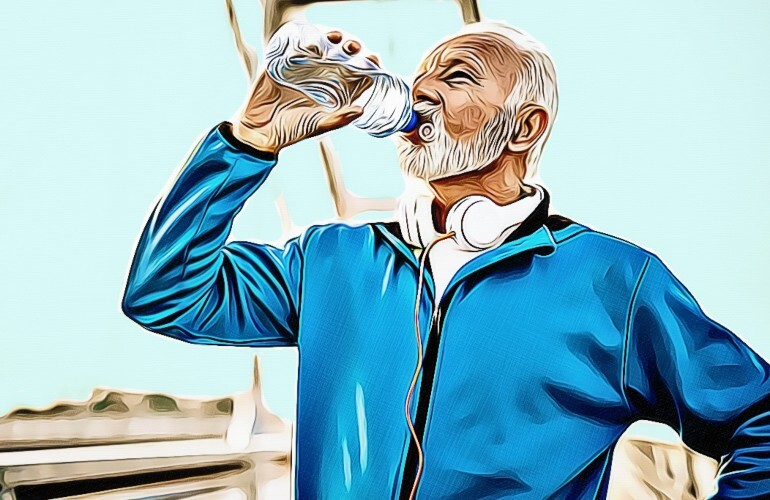
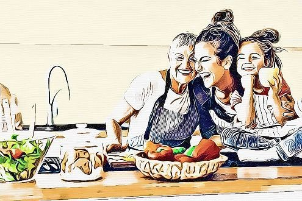
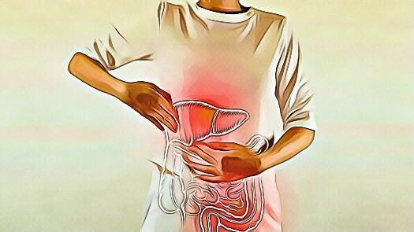

There are many ways that doctors use to treat back pain.
Common treatments are over-the-counter (OTC) drugs, ibuprofen, or nonsteroidal anti-inflammatory drugs (NSAIDs).
But did you know that too many medications can cause liver issues? You don’t want to worsen your health issues!
Here are 5 natural back-pain relievers that help fight the root cause of back pain. Let’s count down towards #1, starting with…

Arthritis Test: Can You Do This Simple Spine Rotation Movement?




5 Ways To Relieve Back Pain Naturally
There are many ways that doctors use to treat back pain. Common treatments are over-the-counter (OTC) drugs, ibuprofen, or nonsteroidal anti-inflammatory drugs (NSAIDs).
But did you know that too many medications can cause liver issues? You don’t want to worsen your health issues!
Here are 5 natural back-pain relievers that help fight the root cause of back pain.
Let’s count down towards #1, starting with…
#5 Move Your Body (Exercise / Stretching)
Exercise is a natural remedy for your back pain, whether it’s caused by muscular or joint problems, or even mental distress
Just make sure that you do low-impact exercises, such as bridges, lower-back rotational stretches, and even swimming.
Low-impact activities are important to avoid straining your back.
This is also to avoid injury and worsening your condition. Gentle stretches can also increase blood flow to the area of your lower back.
This can reduce your back’s stiffness.
Yoga Can Also Do Wonders
If you wish for a calmer method, yoga can do the trick.
In fact, doctors recommend yoga as well.
Yoga helps relax your body as well as promote strength.
The different yoga poses also help release tension and align your body.
Benefits of Exercise and Yoga
Exercises have been proven to strengthen your lower back and help with endurance.
By also doing muscle exercises, you will help build strength and flexibility.
Yoga, meanwhile, gives you balance in your body and alleviates the stress that causes aches and pains.
#4 Get Social
A stable support system can help alleviate back pain.
Chronic pain has also been linked to isolation and loneliness. It is good to reach out to people.
People who suffer from any form of physical pain, including lower back pain, benefit from building strong relationships.
When you know that you have friends, even if you only get to talk online, your pain levels will significantly decrease.
Join Support Groups
If you are yet to build friendships, try support groups.
There are plenty of online groups that cater to those who suffer from chronic pain.
If you don’t like the idea of support groups, then join ones based on your passion and interest.
What do you like? Books? Music? Sports? Photography?
Benefits Of Getting Social
There are many health benefits to strong social connections.
It has been proven that you can suffer from a host of health issues when you are lonely and isolated. Lower back pain can also be age-related.
When older people have close friends, they enjoy a good life and do not experience physical pain.
Take care of your present relationships and build ones that can last a lifetime.
#3 Sleep Well
Prevent a sore back in the morning by getting enough sleep.
Your sleep must also be restful.
Getting 7 to 8 hours of restful sleep can heal your body in many ways.
Also, when you sleep well, you will feel refreshed and energized. Your stress can also melt away.
Different Ways To Sleep Better
There are many natural sleep aids available, and find out which works for you.
Here are vitamins and supplements that are known as natural sleep inducers:
Melatonin
This is a hormone that your body produces. Its job is to send a message to your brain that it’s time to hit the sack. It helps regulate your circadian rhythm.
L-Theanine
An amino acid that causes relaxation and reduces anxiety. This sleep-aid pill can help erase your worries and make your sleep soundly.
Valerian
An herbal supplement that is commonly used to treat anxiety and depression. Taken before bedtime, it can make you snore.
Sleep Positions For Lower Back Pain
Sleeping the correct way can significantly reduce your lower back pain. This is also a way to avoid worsening the problem.
Sleeping on your side or on your back can help.
Sleeping on your stomach also helps.
Using the correct mattress, posture, and pillow should be combined with these sleeping positions.
#2 Hot And Cold Compress
Get quick and easy relief from a hot or cold compress.
There are therapies that also alternate hot and cold treatment on lower back pain.
Cold Compress
If you are gritting your teeth from intense lower back pain, putting ice on it can numb the ache.
You can get cold packs from the drugstore.
As an option, you can use frozen vegetables or plain ice cubes— just wrap them in a cloth to avoid a nasty frostbite.
Make sure to apply ice for only 20 minutes maximum. Then repeat after half an hour or so.
Hot Compress
If stiff muscles are the culprit for your lower back pain, use a heating pad.
When using a heating pad, make sure you follow the instructions down to the T to avoid injury or burns.
You may resort to the old-fashioned way: a hot water bottle.
Just take care not to apply too much heat on your skin by covering the bottle with a cloth.
#1 Massage
When your lower back pain is caused by osteoarthritis, or rheumatoid arthritis, get yourself a massage.
Even if you are taking pain meds to manage your lower back issues, combining them with a massage can result in a more powerful relief.
Benefits of A Massage
A good massage loosens stiff and tight muscles.
This is an effective natural remedy if you are allergic to muscle-relaxant drugs.
It can also promote better blood circulation.
When blood flows to the lower back, it reduces pain.
A nice massage is also a stress-buster.
Studies also show that it can also manage depression and anxiety. Massages release dopamine and serotonin, which can take away those aches and pains.
When To See A Doctor
See a doctor if the lower back pain is persistent.
If this is a frequent problem, you must investigate.
If the pain spreads to your legs, and is severe, you also need to get it checked.
1. https://www.mayoclinic.org/diseases-conditions/back-pain/diagnosis-treatment/drc-20369911
2. https://www.webmd.com/hepatitis/toxic-liver-disease
3. https://www.medicalnewstoday.com/articles/323204
4. https://www.pinnaclepainaz.com/blog/5-ways-to-increase-blood-flow-to-reduce-back-pain
5. https://www.healthline.com/health/fitness-exercise/yoga-for-back-pain
6. https://www.pathways.health/isolation-and-chronic-pain-how-to-beat-the-downward-spiral/
7. https://www.betterhealth.vic.gov.au/health/HealthyLiving/Strong-relationships-strong-health
8. https://www.webmd.com/back-pain/news/20110705/study-massage-helps-treat-low-back-pain
9. https://www.spine-health.com/wellness/massage-therapy/massage-therapy-lower-back-pain
10. https://www.medicalnewstoday.com/articles/29108
11. https://www.health.harvard.edu/pain/hot-or-cold-for-back-pain
12. https://www.spine-health.com/wellness/sleep/restorative-sleep-brings-back-pain-relief
13. https://www.healthline.com/nutrition/sleep-aids
14. https://www.mayoclinic.org/diseases-conditions/back-pain/multimedia/sleeping-positions/sls-20076452